Tue, 27 Mar 2012 08:51:05 GMT
Una única Sony
Una única Sony
Ya os adelantamos los planes del gigante japonés con la llegada de Kazuo Hirai, rompiendo muros entre las diferentes divisiones de la compañía, y priorizando en dispositivos móviles (tablets y teléfonos), juegos (división PlayStation), y el departamento Digital Imaging (cámaras). Hoy nos vuelven a hablar sobre el tema, y nos comunican que la reestructuración será efectiva el próximo uno de abril, y en ella también se disolverá la línea que separa la Sony profesional de la doméstica, de ahí el nombre con el que quieren dar a conocer a la nueva estrategia: “One Sony”. Empezando con los teléfonos Los primeros cambios los hemos estado experimentando antes de que la nueva Sony empiece a andar, con la adquisición completa de Sony Ericsson, que pasó a llamarse Sony Mobile Communications, y la completa renovación de la gama de Smartphones (Xperia S, U, P, Sola, Xperia neo L). Para la compañía japonesa el negocio de la telefonía móvil no podía ser algo secundario, y la única forma de hacerlo despegar era controlándolo por su cuenta, y empezando a realizar sinergias con el resto de sus departamentos. Bajo mi punto de vista, lo están haciendo muy bien. Aunque no se ha hablado del tema, las tablets que han aparecido en el mercado no están teniendo el éxito esperado, algo que más o menos está ocurriendo con el resto de fabricantes que optaron por Android (Honeycomb). Valoramos su originalidad y estilo, pero habrá que darle una vuelta de tuerca al departamento encargado. Experiencia de usuario para muchos dispositivos diferentes Nuevos nombres llegan a tomar responsabilidades en Sony, que más que por los nombres en sí, destacamos los puestos que la compañía quiere potenciar. Shoji Nemoto llega para liderar las estrategias tecnológicas y la investigación y desarrollo, mientras que Kunimasa Suzuki se encargará de la experiencia de usuario de los productos. Es interesante la llegada de Suzuki a esta posición ya que es público que es uno de los interesados en que el sistema operativo de PS Vita llegue a otros dispositivos móviles, como ya os comentamos hace unas semanas. En sus manos estará gobernar la forma en la que los diferentes dispositivos se entiendan y compartan servicios. Las teles las controlará el jefe Curioso como un departamento histórico en Sony, como el de los televisores, ha quedado relegado en prioridades con respecto a los aparatos móviles, y que ha sufrido el éxito de sus competidores coreanos. En este caso será el propio Kazuo Hirai el encargado de supervisar la división, a la que llegarán cambios importantes en los próximos meses, en la búsqueda de hacer rentable el negocio. Ya conocemos el buen hacer de Kazuo con la división PlayStation, ¿será capaz de sacarle brillo a la división de los televisores? Destacar también que no se haya situado entre los pilares principales de la compañía a su división de ordenadores VAIO. Estamos seguros de que no pararán de llegar novedades con lo último en tecnología, como nos tienen acostumbrados, pero está claro que no es la división que más ingresos reporta en estos momentos. Terminamos con un nuevo interés por parte de Sony, el equipamiento médico, por lo que la compañía japonesa trabajará con mayor prioridad en el negocio de los servicios médicos y hospitales, aportando estilo y tecnología. Más información | Sony
Ya os adelantamos los planes del gigante japonés con la llegada de Kazuo Hirai, rompiendo muros entre las diferentes divisiones de la compañía, y priorizando en dispositivos móviles (tablets y teléfonos), juegos (división PlayStation), y el departamento Digital Imaging (cámaras).
Hoy nos vuelven a hablar sobre el tema, y nos comunican que la reestructuración será efectiva el próximo uno de abril, y en ella también se disolverá la línea que separa la Sony profesional de la doméstica, de ahí el nombre con el que quieren dar a conocer a la nueva estrategia: “One Sony”.
Empezando con los teléfonos
Los primeros cambios los hemos estado experimentando antes de que la nueva Sony empiece a andar, con la adquisición completa de Sony Ericsson, que pasó a llamarse Sony Mobile Communications, y la completa renovación de la gama de Smartphones (Xperia S, U, P, Sola, Xperia neo L).
Para la compañía japonesa el negocio de la telefonía móvil no podía ser algo secundario, y la única forma de hacerlo despegar era controlándolo por su cuenta, y empezando a realizar sinergias con el resto de sus departamentos. Bajo mi punto de vista, lo están haciendo muy bien.
Aunque no se ha hablado del tema, las tablets que han aparecido en el mercado no están teniendo el éxito esperado, algo que más o menos está ocurriendo con el resto de fabricantes que optaron por Android (Honeycomb). Valoramos su originalidad y estilo, pero habrá que darle una vuelta de tuerca al departamento encargado.
Experiencia de usuario para muchos dispositivos diferentes
Nuevos nombres llegan a tomar responsabilidades en Sony, que más que por los nombres en sí, destacamos los puestos que la compañía quiere potenciar. Shoji Nemoto llega para liderar las estrategias tecnológicas y la investigación y desarrollo, mientras que Kunimasa Suzuki se encargará de la experiencia de usuario de los productos.
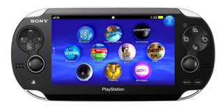
Es interesante la llegada de Suzuki a esta posición ya que es público que es uno de los interesados en que el sistema operativo de PS Vita llegue a otros dispositivos móviles, como ya os comentamos hace unas semanas. En sus manos estará gobernar la forma en la que los diferentes dispositivos se entiendan y compartan servicios.
Las teles las controlará el jefe
Curioso como un departamento histórico en Sony, como el de los televisores, ha quedado relegado en prioridades con respecto a los aparatos móviles, y que ha sufrido el éxito de sus competidores coreanos.
En este caso será el propio Kazuo Hirai el encargado de supervisar la división, a la que llegarán cambios importantes en los próximos meses, en la búsqueda de hacer rentable el negocio. Ya conocemos el buen hacer de Kazuo con la división PlayStation, ¿será capaz de sacarle brillo a la división de los televisores?
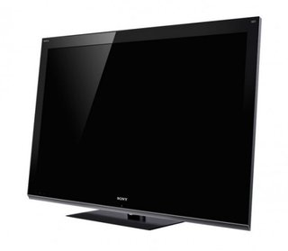
Destacar también que no se haya situado entre los pilares principales de la compañía a su división de ordenadores VAIO. Estamos seguros de que no pararán de llegar novedades con lo último en tecnología, como nos tienen acostumbrados, pero está claro que no es la división que más ingresos reporta en estos momentos.
Terminamos con un nuevo interés por parte de Sony, el equipamiento médico, por lo que la compañía japonesa trabajará con mayor prioridad en el negocio de los servicios médicos y hospitales, aportando estilo y tecnología.
Más información | Sony

Tue, 27 Mar 2012 06:42:57 GMT
El Logitech UE Air Speaker con AirPlay busca sitio en tu casa
El Logitech UE Air Speaker con AirPlay busca sitio en tu casa
Logitech ha colocado un nuevo sistema de sonido dentro de su gama de equipos Ultimate Ears. Y como los productos de Apple están en el centro de la diana a la que apuntan, lo ha dotado de conectividad AirPlay para poder enviar la música de iTunes o los dispositivos iPhone, iPad o iPod Touch directamente sin cables vía nuestra red WiFi de casa. El nuevo sistema de sonido se llama Logitech UE Air Speaker y tiene un diseño cuidado y en el que destacamos la “cuna” desplegable, de manera que cuando tengamos la fuente conectada vía AirPlay podamos mantenerla oculta, pero haya posibilidad de tener bien alojado el teléfono o reproductor de Apple si queremos recargarlo. Como otras marcas con sistemas de sonido parecidos, Logitech ha optado por dejar en manos de una aplicación la configuración del sistema, el cual, una vez emparejado y conectado a nuestra red WiFi, será recordado por los equipos de Apple compatibles y podremos “emitir” sonido directamente. La base no funciona con baterías, hay que tenerla conectada a la corriente AC, y la compañía no indica la potencia que nos ofrece. Si quieres hacerte con el nuevo sistema de sonido con AirPlay Logitech UE Air Speaker, llega a Europa y EEUU en abril con un precio de 349 euros. Galería de fotos (Haz click en una imagen para ampliarla)
Más información | Logitech.

Logitech ha colocado un nuevo sistema de sonido dentro de su gama de equipos Ultimate Ears. Y como los productos de Apple están en el centro de la diana a la que apuntan, lo ha dotado de conectividad AirPlay para poder enviar la música de iTunes o los dispositivos iPhone, iPad o iPod Touch directamente sin cables vía nuestra red WiFi de casa.
El nuevo sistema de sonido se llama Logitech UE Air Speaker y tiene un diseño cuidado y en el que destacamos la “cuna” desplegable, de manera que cuando tengamos la fuente conectada vía AirPlay podamos mantenerla oculta, pero haya posibilidad de tener bien alojado el teléfono o reproductor de Apple si queremos recargarlo.
Como otras marcas con sistemas de sonido parecidos, Logitech ha optado por dejar en manos de una aplicación la configuración del sistema, el cual, una vez emparejado y conectado a nuestra red WiFi, será recordado por los equipos de Apple compatibles y podremos “emitir” sonido directamente.
La base no funciona con baterías, hay que tenerla conectada a la corriente AC, y la compañía no indica la potencia que nos ofrece.
Si quieres hacerte con el nuevo sistema de sonido con AirPlay Logitech UE Air Speaker, llega a Europa y EEUU en abril con un precio de 349 euros.
Galería de fotos
(Haz click en una imagen para ampliarla)
Más información | Logitech.
Mon, 26 Mar 2012 20:44:50 GMT
HTCSense.com cierra sus puertas el 30 de abril, esperamos un sustituto
HTCSense.com cierra sus puertas el 30 de abril, esperamos un sustituto
Noticia sorpresa que habrá que pararse a entender con más información por parte de HTC, ya que no nos queda claro qué es lo que van a hacer con la página web que abría las puertas de la nube a sus clientes. Los usuarios están recibiendo un correo por parte de HTC en el que los informa del cierre de HTCSense.com el próximo 30 de abril, y por lo tanto, invita a descargar los contenidos que tenemos alojados en él para evitar la pérdida de los mismos. Suena realmente raro de parte de una compañía que había apostado por el valor añadido que aportaban sus servicios a sus compradores, y con la llegada de los teléfonos HTC One, no es lo que precisamente esperábamos. HTC informa de que está trabajando en mejorar sus servicios, por lo que estamos seguros de que hay renovación a la vuelta de la esquina, pero por qué invitarnos a descargar nuestros contenidos, y no pasarlos al supuesto nuevo servicio. A HTCSense.com se tiene acceso desde tablets y teléfonos de la compañía taiwanesa, y en él se pueden almacenar contactos, mensajes, footsprints o el registro de llamadas de los dispositivos. Curioso también que la propia HTC nos invita a pasarnos por Google Play para encontrar alternativas a sus servicios. Más información | HTC
Noticia sorpresa que habrá que pararse a entender con más información por parte de HTC, ya que no nos queda claro qué es lo que van a hacer con la página web que abría las puertas de la nube a sus clientes.
Los usuarios están recibiendo un correo por parte de HTC en el que los informa del cierre de HTCSense.com el próximo 30 de abril, y por lo tanto, invita a descargar los contenidos que tenemos alojados en él para evitar la pérdida de los mismos.
Suena realmente raro de parte de una compañía que había apostado por el valor añadido que aportaban sus servicios a sus compradores, y con la llegada de los teléfonos HTC One, no es lo que precisamente esperábamos.
HTC informa de que está trabajando en mejorar sus servicios, por lo que estamos seguros de que hay renovación a la vuelta de la esquina, pero por qué invitarnos a descargar nuestros contenidos, y no pasarlos al supuesto nuevo servicio.
A HTCSense.com se tiene acceso desde tablets y teléfonos de la compañía taiwanesa, y en él se pueden almacenar contactos, mensajes, footsprints o el registro de llamadas de los dispositivos. Curioso también que la propia HTC nos invita a pasarnos por Google Play para encontrar alternativas a sus servicios.
Más información | HTC
Mon, 26 Mar 2012 14:30:00 GMT
K-Glove, el guante robotico para agarrar más y mejor
K-Glove, el guante robotico para agarrar más y mejor
General Motors y la NASA acaban de terminar el primer prototipo de un guante conocido como K-Glove o Human Grasp Assisted Device. Se trata de un prototipo de wearable technology que sirve para aumentar la fuerza de agarre de una mano humana. K-Glove ha sido esarrollado a partir del robot auxiliar Robonauta2 que la agencia aeroespacial ya tiene funcionando en la Estación Espacial Internacional desde 2011. El guante está dotado de sensores de presión,y una serie de motores y tendones sintéticos parecidos a la mano cien por cien robótica original. Una mano humana necesita ejercer entre 7 y 9 kilos de presión para sostener una herramienta pesada, lo que supone un agotamiento considerable con sólo unos pocos minutos de uso continuado. Cuando una persona con este peculiar guante sostiene un objeto, los senores de presión en las yemas de los dedos determinan la fuerza necesaria para sostenerlo y poonen en marcha los tendones sintéticos, que ejercen la fuerza de agarre necesaria hasta que el usuario reduzca la presión para soltarlo. K-Glove permite reducir el esfuerzo de la mano a entre sólo 2 y 4 kilos de presión. El invento se alimenta de una serie de baterías de ión litio en el antebrazo. La idea es que el K-Glove pueda ser utilizado por astronautas o por operarios de la industria de automoción que necesitan sostener herramientas durante largos períodos de tiempo. El K-Glove no está a la venta, pero General Motors ya está trabajando en una segunda versión más ligera y reducida. Y a vosotros, ¿Que otros usos se os ocurren para este guante con super-agarre robótico? Más información | General Motors | NASA
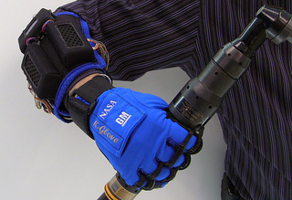
General Motors y la NASA acaban de terminar el primer prototipo de un guante conocido como K-Glove o Human Grasp Assisted Device. Se trata de un prototipo de wearable technology que sirve para aumentar la fuerza de agarre de una mano humana.
K-Glove ha sido esarrollado a partir del robot auxiliar Robonauta2 que la agencia aeroespacial ya tiene funcionando en la Estación Espacial Internacional desde 2011. El guante está dotado de sensores de presión,y una serie de motores y tendones sintéticos parecidos a la mano cien por cien robótica original.
Una mano humana necesita ejercer entre 7 y 9 kilos de presión para sostener una herramienta pesada, lo que supone un agotamiento considerable con sólo unos pocos minutos de uso continuado.
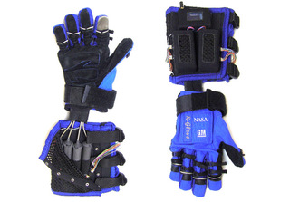
Cuando una persona con este peculiar guante sostiene un objeto, los senores de presión en las yemas de los dedos determinan la fuerza necesaria para sostenerlo y poonen en marcha los tendones sintéticos, que ejercen la fuerza de agarre necesaria hasta que el usuario reduzca la presión para soltarlo. K-Glove permite reducir el esfuerzo de la mano a entre sólo 2 y 4 kilos de presión.
El invento se alimenta de una serie de baterías de ión litio en el antebrazo. La idea es que el K-Glove pueda ser utilizado por astronautas o por operarios de la industria de automoción que necesitan sostener herramientas durante largos períodos de tiempo. El K-Glove no está a la venta, pero General Motors ya está trabajando en una segunda versión más ligera y reducida. Y a vosotros, ¿Que otros usos se os ocurren para este guante con super-agarre robótico?
Más información | General Motors | NASA
Mon, 26 Mar 2012 12:11:00 GMT
Runtastic pone un reloj y pulsómetro a disposición de sus aplicaciones
Runtastic pone un reloj y pulsómetro a disposición de sus aplicaciones
Primero fueron las aplicaciones deportivas para diferentes plataformas móviles y ahora llega el hardware para complementarlas. Runtastic amplía su oferta para deportistas con dos nuevos productos “físicos”: un reloj GPS y una cinta-cardíaca. El reloj Runtastic GPS es un dispositivo que registra la información de ritmo, distancia, duración de un ejercicio, elevación, calorías y ritmo cardíaco. Cuenta con cinco perfiles de entrenamiento, luz y una duración de la batería de 14 horas en modo GPS. Su precio es de 150 euros. Si para registrar nuestro ejercicio preferimos llevar un smartphone pero queremos que éste sea capaz de recibir información de una cinta cardíaca, Runtastic también tiene ya en su catálogo un receptor que se conecta a la entrada de auriculares de su smartphone y que recibe la información de una cinta para el pecho asociada. Su precio es de 60 euros. Más información | Runtastic.

Primero fueron las aplicaciones deportivas para diferentes plataformas móviles y ahora llega el hardware para complementarlas. Runtastic amplía su oferta para deportistas con dos nuevos productos “físicos”: un reloj GPS y una cinta-cardíaca.
El reloj Runtastic GPS es un dispositivo que registra la información de ritmo, distancia, duración de un ejercicio, elevación, calorías y ritmo cardíaco. Cuenta con cinco perfiles de entrenamiento, luz y una duración de la batería de 14 horas en modo GPS. Su precio es de 150 euros.
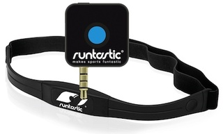
Si para registrar nuestro ejercicio preferimos llevar un smartphone pero queremos que éste sea capaz de recibir información de una cinta cardíaca, Runtastic también tiene ya en su catálogo un receptor que se conecta a la entrada de auriculares de su smartphone y que recibe la información de una cinta para el pecho asociada. Su precio es de 60 euros.
Más información | Runtastic.
Mon, 26 Mar 2012 09:30:00 GMT
Logitech ConferenceCam, a la venta en mayo
Logitech ConferenceCam, a la venta en mayo
Logitech nos presenta un nuevo producto para uno de los sectores donde mejor se mueve, las cámaras webs, en este caso con un destino más profesional que doméstico, pero igualmente interesante para todos. La Logitech BCC950, mejor conocida como ConferenceCam, destaca por su altavoz integrado en la base, y por contar con la posibilidad de dirigir la dirección a la que apunta la cámara, también el zoom, con un mando a distancia. La calidad máxima que puede registrar la ConferenceCam es el formato 1080p a 30 imágenes por segundo, cuenta con ópticas Carl Zeiss, y se conecta vía USB a ordenadores Mac o PC, con soporte para software como Skype o Microsoft Lync. El dispositivo aparecerá en el mercado en mayo, a un precio de 250 dólares para el caso de Estados Unidos, estaremos pendientes de información relativa a nuestro territorio. Os dejamos con un vídeo para que la conozcáis mejor: Más información | Logitech
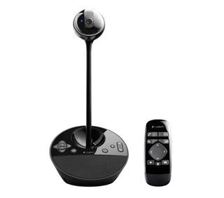
Logitech nos presenta un nuevo producto para uno de los sectores donde mejor se mueve, las cámaras webs, en este caso con un destino más profesional que doméstico, pero igualmente interesante para todos.
La Logitech BCC950, mejor conocida como ConferenceCam, destaca por su altavoz integrado en la base, y por contar con la posibilidad de dirigir la dirección a la que apunta la cámara, también el zoom, con un mando a distancia.
La calidad máxima que puede registrar la ConferenceCam es el formato 1080p a 30 imágenes por segundo, cuenta con ópticas Carl Zeiss, y se conecta vía USB a ordenadores Mac o PC, con soporte para software como Skype o Microsoft Lync.
El dispositivo aparecerá en el mercado en mayo, a un precio de 250 dólares para el caso de Estados Unidos, estaremos pendientes de información relativa a nuestro territorio. Os dejamos con un vídeo para que la conozcáis mejor:
Más información | Logitech
Mon, 26 Mar 2012 07:00:00 GMT
Vibraciones al volante como complemento del GPS
Vibraciones al volante como complemento del GPS
La industria sigue haciendo esfuerzos por encontrar sistemas de apoyo a la navegación GPS que nos permitan no tener que desviar la vista de la carretera, lo último que nos presenta la operadora AT&T, junto a la Universidad de Carnegie Mellon, poco tiene que ver con móviles. Han desarrollado un volante en el que mediante vibraciones nos indican cuál es la siguiente maniobra a realizar, y al tratarse de una respuesta que sentimos con las manos, reduciría las distracciones externas. Estas vibraciones serían complementarias a la información habitual que nos sirve el GPS. El sistema cuenta con veinte puntos de vibración diferenciados alrededor del volante, que sincronizados pueden darnos diferentes mensajes, un ejemplo: si la vibración tuviera lugar en el sentido de las agujas del reloj, nos estará avisando de que hay que girar a la derecha. Según los estudios realizados por los desarrolladores, el sistema se muestra más efectivo con conductores jóvenes, desviando en menor medida la mirada hacia la pantalla del dispositivo GPS. En el caso de los conductores más mayores, la cosa funcionaba mejor si sólo se le servían instrucciones acústicas. Sin duda, el volante es uno de los elementos del coche que más componentes está asimilando en los últimos años, como la inclusión de los Airbags o botones de control de todo tipo (audio, marchas, control de velocidad), así que no nos extrañará encontrarnos con la vibración. Al margen de las indicaciones en la navegación GPS, otras aplicaciones del desarrollo tienen que ver con la seguridad, como el aviso en el caso de que tengamos un vehículo en el punto muerto de visión, o situaciones similares. El sistema será presentado al gran público por AT&T el próximo mes de junio, por lo que parece que la cosa va en serio. ¿Consideráis interesante el avance?¿encontráis utilidad práctica? Vía | Autoblog
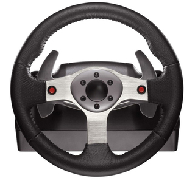
La industria sigue haciendo esfuerzos por encontrar sistemas de apoyo a la navegación GPS que nos permitan no tener que desviar la vista de la carretera, lo último que nos presenta la operadora AT&T, junto a la Universidad de Carnegie Mellon, poco tiene que ver con móviles.
Han desarrollado un volante en el que mediante vibraciones nos indican cuál es la siguiente maniobra a realizar, y al tratarse de una respuesta que sentimos con las manos, reduciría las distracciones externas. Estas vibraciones serían complementarias a la información habitual que nos sirve el GPS.
El sistema cuenta con veinte puntos de vibración diferenciados alrededor del volante, que sincronizados pueden darnos diferentes mensajes, un ejemplo: si la vibración tuviera lugar en el sentido de las agujas del reloj, nos estará avisando de que hay que girar a la derecha.
Según los estudios realizados por los desarrolladores, el sistema se muestra más efectivo con conductores jóvenes, desviando en menor medida la mirada hacia la pantalla del dispositivo GPS. En el caso de los conductores más mayores, la cosa funcionaba mejor si sólo se le servían instrucciones acústicas.
Sin duda, el volante es uno de los elementos del coche que más componentes está asimilando en los últimos años, como la inclusión de los Airbags o botones de control de todo tipo (audio, marchas, control de velocidad), así que no nos extrañará encontrarnos con la vibración.
Al margen de las indicaciones en la navegación GPS, otras aplicaciones del desarrollo tienen que ver con la seguridad, como el aviso en el caso de que tengamos un vehículo en el punto muerto de visión, o situaciones similares.
El sistema será presentado al gran público por AT&T el próximo mes de junio, por lo que parece que la cosa va en serio. ¿Consideráis interesante el avance?¿encontráis utilidad práctica?
Vía | Autoblog
Mon, 26 Mar 2012 05:09:00 GMT
Logitech M600, lo hemos probado
Logitech M600, lo hemos probado
Logitech no podía faltar a la fiesta de ratones táctiles dispuestos a conquistar nuestras mesas de trabajo en poco tiempo por obra y gracia de los nuevos sistemas operativos y el entrenamiento que nuestros dedos están teniendo con las pantallas táctiles. El Logitech M600 es el primer intento serio de la compañía y en Xataka ya lo hemos probado. ¿Quieres conocer qué nos ha parecido este ratón cuya superficie es táctil? Logitech M600, con todo lo bueno de la compañía Nada más abrir la caja donde viene el ratón Logitech M600 uno se da cuenta de qué marca hay detrás. Pocos fabricantes de periféricos le dan tanta personalidad en forma de calidad a sus equipos. Logitech es una de ellas. El Logitech M600 enamora por su diseño, suave en las formas, con gran acabado, ligero y muy agradable de tocar. De eso se trata, pues estamos hablando de un ratón cuya superficie (toda) superior es táctil. Pero solo podemos usar un dedo al mismo tiempo. En mano el ratón es bastante ergonómico, tiene un tamaño correcto y puede ser manejado indistintamente por personas zurdas o diestras. Lo que Logitech ha hecho con este M600 es eliminar la rueda y los botones mecánicos responsables de los desplazamientos verticales y horizontales de los ratones y los ha implementado en forma de gestos con un dedo sobre su delicada superficie. Las funciones de botón derecho e izquierdo sí que se mantienen en forma mecánica. Aunque no se vean, los botones derecho e izquierdo están ahí En funcionamiento, el Logitech M600 es preciso, rápido y fluido, además de agradable de manejar. La mayor duda la teníamos en la función de scroll, pero podemos conseguir exactamente el mismo efecto que con una de las estupendas ruedas metálicas de los mejores ratones de la compañía. Un detalle que nos ha gustado es que podemos usar una o dos baterías para alimentarlo. La funcionalidad es la misma, solamente cambia la autonomía: tres meses con una sola pila y medio año con las dos. Usar una u otra combinación depende del peso que queramos añadirle al ratón, que nos parece bastante compacto como para considerarlo de viaje pero también muy cómodo para el escritorio. Por cierto, viene con una funda de tela para transportarlo. En la parte de abajo, además de las pilas, podemos tener alojado el receptor de tipo nano que integra tecnología Unifying, que asegura el funcionamiento de varios periféricos de la compañía con un solo receptor en el puerto USB. Podemos usar una o dos pilas y cambiar el peso del ratón … pero todavía por detrás en capacidades táctiles Dicho todo esto, toca pararse con lo que nos ha parecido lo más mejorable del ratón Logitech M600. Como has leído, este ratón permite realizar en su superficie táctil desplazamientos en horizontal y en vertical con absoluta suavidad y precisión, pero nos parece que siendo un periférico con aspiraciones de “ratón del futuro”, se ha quedado corto en funcionalidades y por ejemplo no nos parece correcto que se haya quedado sin capacidades multitáctiles. Si preguntas por el software FlowScroll que potencia las funciones de desplazamiento con los navegadores web compatibles, no hemos notado destacables diferencias respecto al funcionamiento sin el software instalado. Y aunque no nos importa que las funciones de botón izquierdo y derecho se realicen de forma mecánica, pues son muy silenciosas, hubiera sido más coherente que éstas también se hubieran implementado de manera táctil como si de un trackpad de tratara, que al final creo que debe ser el objetivo de un ratón de este tipo. Por cierto, este Logitech M600 solo funciona a pleno rendimiento con Windows 7. En Mac o Windows XP podemos usarlo sin problemas pero no nos ha ido igual de fluido que en Windows 7 ni nos han funcionado de la misma manera los gestos laterales, aunque sí el de scroll táctil. El nuevo Logitech M600 entre dos modelos anteriores de la misma compañía La opinión de Xataka Pese a todo lo dicho, el Logitech M600 es un ratón completo, preciso, increíble en diseño y muy agradable al tacto, que funciona como debe pero del que esperamos más de su apartado táctil. Esa mejora no la queremos en el funcionamiento, sino en funcionalidades, ya que no hemos encontrado nada que no podamos hacer con un ratón no táctil y sus respectivos botones y ruedas. Bueno sí, la distinción y el diseño de este Logitech M600 que sale por 70 euros, más caro que modelos completos de la compañía pero no con tanto diseño ni superficies táctiles. El ratón ha sido cedido para la prueba por parte de Logitech. Puedes consultar nuestra política de relaciones con empresas Más información | Logitech.

Logitech no podía faltar a la fiesta de ratones táctiles dispuestos a conquistar nuestras mesas de trabajo en poco tiempo por obra y gracia de los nuevos sistemas operativos y el entrenamiento que nuestros dedos están teniendo con las pantallas táctiles.
El Logitech M600 es el primer intento serio de la compañía y en Xataka ya lo hemos probado. ¿Quieres conocer qué nos ha parecido este ratón cuya superficie es táctil?
Logitech M600, con todo lo bueno de la compañía
Nada más abrir la caja donde viene el ratón Logitech M600 uno se da cuenta de qué marca hay detrás. Pocos fabricantes de periféricos le dan tanta personalidad en forma de calidad a sus equipos. Logitech es una de ellas.
El Logitech M600 enamora por su diseño, suave en las formas, con gran acabado, ligero y muy agradable de tocar. De eso se trata, pues estamos hablando de un ratón cuya superficie (toda) superior es táctil. Pero solo podemos usar un dedo al mismo tiempo.

En mano el ratón es bastante ergonómico, tiene un tamaño correcto y puede ser manejado indistintamente por personas zurdas o diestras.
Lo que Logitech ha hecho con este M600 es eliminar la rueda y los botones mecánicos responsables de los desplazamientos verticales y horizontales de los ratones y los ha implementado en forma de gestos con un dedo sobre su delicada superficie. Las funciones de botón derecho e izquierdo sí que se mantienen en forma mecánica.
 Aunque no se vean, los botones derecho e izquierdo están ahí
Aunque no se vean, los botones derecho e izquierdo están ahí En funcionamiento, el Logitech M600 es preciso, rápido y fluido, además de agradable de manejar. La mayor duda la teníamos en la función de scroll, pero podemos conseguir exactamente el mismo efecto que con una de las estupendas ruedas metálicas de los mejores ratones de la compañía.

Un detalle que nos ha gustado es que podemos usar una o dos baterías para alimentarlo. La funcionalidad es la misma, solamente cambia la autonomía: tres meses con una sola pila y medio año con las dos. Usar una u otra combinación depende del peso que queramos añadirle al ratón, que nos parece bastante compacto como para considerarlo de viaje pero también muy cómodo para el escritorio. Por cierto, viene con una funda de tela para transportarlo.
En la parte de abajo, además de las pilas, podemos tener alojado el receptor de tipo nano que integra tecnología Unifying, que asegura el funcionamiento de varios periféricos de la compañía con un solo receptor en el puerto USB.
 Podemos usar una o dos pilas y cambiar el peso del ratón
Podemos usar una o dos pilas y cambiar el peso del ratón … pero todavía por detrás en capacidades táctiles
Dicho todo esto, toca pararse con lo que nos ha parecido lo más mejorable del ratón Logitech M600. Como has leído, este ratón permite realizar en su superficie táctil desplazamientos en horizontal y en vertical con absoluta suavidad y precisión, pero nos parece que siendo un periférico con aspiraciones de “ratón del futuro”, se ha quedado corto en funcionalidades y por ejemplo no nos parece correcto que se haya quedado sin capacidades multitáctiles.
Si preguntas por el software FlowScroll que potencia las funciones de desplazamiento con los navegadores web compatibles, no hemos notado destacables diferencias respecto al funcionamiento sin el software instalado.

Y aunque no nos importa que las funciones de botón izquierdo y derecho se realicen de forma mecánica, pues son muy silenciosas, hubiera sido más coherente que éstas también se hubieran implementado de manera táctil como si de un trackpad de tratara, que al final creo que debe ser el objetivo de un ratón de este tipo.
Por cierto, este Logitech M600 solo funciona a pleno rendimiento con Windows 7. En Mac o Windows XP podemos usarlo sin problemas pero no nos ha ido igual de fluido que en Windows 7 ni nos han funcionado de la misma manera los gestos laterales, aunque sí el de scroll táctil.
 El nuevo Logitech M600 entre dos modelos anteriores de la misma compañía
El nuevo Logitech M600 entre dos modelos anteriores de la misma compañía La opinión de Xataka
Pese a todo lo dicho, el Logitech M600 es un ratón completo, preciso, increíble en diseño y muy agradable al tacto, que funciona como debe pero del que esperamos más de su apartado táctil.
Esa mejora no la queremos en el funcionamiento, sino en funcionalidades, ya que no hemos encontrado nada que no podamos hacer con un ratón no táctil y sus respectivos botones y ruedas. Bueno sí, la distinción y el diseño de este Logitech M600 que sale por 70 euros, más caro que modelos completos de la compañía pero no con tanto diseño ni superficies táctiles.
El ratón ha sido cedido para la prueba por parte de Logitech. Puedes consultar nuestra política de relaciones con empresas
Más información | Logitech.
Sun, 25 Mar 2012 17:53:09 GMT
No todo en la vida son tablets: análisis y especiales de la semana
No todo en la vida son tablets: análisis y especiales de la semana
Acabamos la semana y ello significa dar un repaso a los análisis y especiales de la semana en Xataka. Para que no te pierdas lo más destacado de nuestras pruebas de gadgets, análisis en profundidad y post de opinión, os los dejamos bien organizados y ordenados, listos para leer y guardar.
En nuestras Tecnoticias sobre ruedas esta semana os hablamos del Zoe y de cómo los coches eléctricos empiezan a ser más asequibles.
La gráfica Nvidia GTX 680 se presentaba esta semana y la repasábamos a fondo.
Analizamos otro de los ultrabooks importantes, el Sony Vaio Z.
Si tienes un disco duro multimedia no dejes de pensar en un NAS para acompañarlo.
Probamos el ASUS P1, un proyector para profesionales en movilidad muy ligero.
En nuestro especial sobre discos duros multimedia repasamos la conexión HDMi 1.4, la más importante.
Probamos el Belkin Screencast, un receptor WiDi muy completo.
Y acabamos el repaso de la semana con la pregunta que nos hacíamos a modo de reflexión: ¿tiene Apple un problema con el iPad o con la fama?

Acabamos la semana y ello significa dar un repaso a los análisis y especiales de la semana en Xataka.
Para que no te pierdas lo más destacado de nuestras pruebas de gadgets, análisis en profundidad y post de opinión, os los dejamos bien organizados y ordenados, listos para leer y guardar.
- En nuestras Tecnoticias sobre ruedas esta semana os hablamos del Zoe y de cómo los coches eléctricos empiezan a ser más asequibles.
- La gráfica Nvidia GTX 680 se presentaba esta semana y la repasábamos a fondo.
- Analizamos otro de los ultrabooks importantes, el Sony Vaio Z.
- Si tienes un disco duro multimedia no dejes de pensar en un NAS para acompañarlo.
- Probamos el ASUS P1, un proyector para profesionales en movilidad muy ligero.
- En nuestro especial sobre discos duros multimedia repasamos la conexión HDMi 1.4, la más importante.
- Probamos el Belkin Screencast, un receptor WiDi muy completo.
- Y acabamos el repaso de la semana con la pregunta que nos hacíamos a modo de reflexión: ¿tiene Apple un problema con el iPad o con la fama?
Sun, 25 Mar 2012 07:36:41 GMT
VinylRecorder T560 permite "fabricar" tus propios vinilos
VinylRecorder T560 permite "fabricar" tus propios vinilos
Los vinilos parece que están de vuelta. Ya sea para fetichistas musicales, para puristas o por puro gusto, hay mercado. ¿Qué tal si te proponemos ir un poco más allá? ¿Qué tal crearte tu propio vinilo literalmente? VinylRecorder T560 es un gadget musical que se ha mostrado en la pasada edición del SXSW y que te permite “escribir” tus propios vinilos o crear ediciones especiales con color e ilustraciones. Como estás viendo, este gadget no es precisamente un equipo sencillo ni de diseño minimalista, sino más bien un equipo casero, pero que funciona. Permite grabar discos a diferentes revoluciones, con diferentes tamaños e incluso podemos escuchar la grabación mientras se realiza. La mala noticia es que este Vinylrecorder T560 es un equipo de háztelo tú mismo, y tendrás que ir montando y configurando el equipo partiendo del kit básico que sale por 3.200 euros. Vía | DigitalMusicNews. Más información | Vinylrecorder.
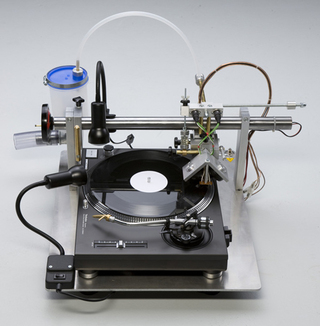
Los vinilos parece que están de vuelta. Ya sea para fetichistas musicales, para puristas o por puro gusto, hay mercado. ¿Qué tal si te proponemos ir un poco más allá? ¿Qué tal crearte tu propio vinilo literalmente?
VinylRecorder T560 es un gadget musical que se ha mostrado en la pasada edición del SXSW y que te permite “escribir” tus propios vinilos o crear ediciones especiales con color e ilustraciones.
Como estás viendo, este gadget no es precisamente un equipo sencillo ni de diseño minimalista, sino más bien un equipo casero, pero que funciona. Permite grabar discos a diferentes revoluciones, con diferentes tamaños e incluso podemos escuchar la grabación mientras se realiza.
La mala noticia es que este Vinylrecorder T560 es un equipo de háztelo tú mismo, y tendrás que ir montando y configurando el equipo partiendo del kit básico que sale por 3.200 euros.
Vía | DigitalMusicNews.
Más información | Vinylrecorder.
Sat, 24 Mar 2012 16:46:00 GMT
Intel Atom en 22 nanómetros: Valley View
Intel Atom en 22 nanómetros: Valley View
Aunque aún a un cierto medio plazo, de cara al año 2013 llegará Intel Atom ‘Valley View’, el nombre en código de los nuevos procesadores Atom que traerán transistores 3D ‘Tri-Gate’ en 22 nanómetros. Una evolución lógica con el paso de los años y que antes llegará con Ivy Bridge, esperamos que en el mes de abril. Estos Intel Atom en 22 nanómetros traerán consigo las típicas mejoras motivadas por el avance en el proceso de fabricación: mayor rendimiento, mejor consumo y menor generación de temperatura. No obstante se dice que habrá un aspecto que mejorará notablemente en ‘Valley View’: el apartado gráfico, que podría heredar muchas características de lo que pronto veremos con Ivy Bridge. Precisamente la GPU de los nuevos Intel Core será uno de los puntos que más mejore respecto de anteriores generaciones. Por ahora no hay datos más concretos acerca de los nuevos Intel Atom, pero parece claro que antes de que llegue Valley View tendremos la oportunidad de ver otros nuevos modelos. De aquí a 2013 seguro que aún tenemos mucho que comentar. Vía | DailyTech.
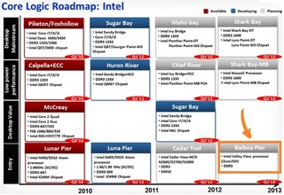
Aunque aún a un cierto medio plazo, de cara al año 2013 llegará Intel Atom ‘Valley View’, el nombre en código de los nuevos procesadores Atom que traerán transistores 3D ‘Tri-Gate’ en 22 nanómetros. Una evolución lógica con el paso de los años y que antes llegará con Ivy Bridge, esperamos que en el mes de abril.
Estos Intel Atom en 22 nanómetros traerán consigo las típicas mejoras motivadas por el avance en el proceso de fabricación: mayor rendimiento, mejor consumo y menor generación de temperatura. No obstante se dice que habrá un aspecto que mejorará notablemente en ‘Valley View’: el apartado gráfico, que podría heredar muchas características de lo que pronto veremos con Ivy Bridge. Precisamente la GPU de los nuevos Intel Core será uno de los puntos que más mejore respecto de anteriores generaciones.
Por ahora no hay datos más concretos acerca de los nuevos Intel Atom, pero parece claro que antes de que llegue Valley View tendremos la oportunidad de ver otros nuevos modelos. De aquí a 2013 seguro que aún tenemos mucho que comentar.
Vía | DailyTech.
Sat, 24 Mar 2012 08:57:00 GMT
Los Pioneer HDJ-2000 se visten de negro cromado
Los Pioneer HDJ-2000 se visten de negro cromado
Pioneer le ha dado un toque de negro cromado a su últimos y conocidos auriculares, los Pioneer HDL-2000. Las características técnicas de esta versión son las mismas, con un rango de trabajo que abarca de los 5 a los 30.000 Hz, entrada de 3.500 mW, potentes graves y una construcción de calidad desde la diadema hasta las almohadillas, con costuras herméticas y diseño que permite girar cada auricular 90 grados y transportarlos con comodidad y seguridad. Los auriculares cromados en negro HDJ-2000-K y el estuche de viaje HDJ-HC01 ya se pueden comprar por 320 y 35 euros respectivamente. Más información | Pioneer.
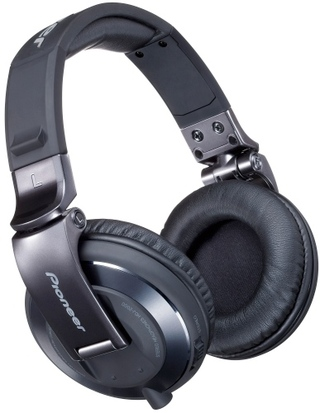
Pioneer le ha dado un toque de negro cromado a su últimos y conocidos auriculares, los Pioneer HDL-2000.
Las características técnicas de esta versión son las mismas, con un rango de trabajo que abarca de los 5 a los 30.000 Hz, entrada de 3.500 mW, potentes graves y una construcción de calidad desde la diadema hasta las almohadillas, con costuras herméticas y diseño que permite girar cada auricular 90 grados y transportarlos con comodidad y seguridad.
Los auriculares cromados en negro HDJ-2000-K y el estuche de viaje HDJ-HC01 ya se pueden comprar por 320 y 35 euros respectivamente.
Más información | Pioneer.
Fri, 23 Mar 2012 18:28:09 GMT
Sony también tiene un Chromebook
Sony también tiene un Chromebook
La verdad es que prácticamente nos habíamos olvidado de los Chromebooks, pero Google y algunas firmas importantes siguen trabajando en ello. Por ahora conocíamos los modelos de Samsung y Acer, y ahora descubrimos que Sony también tiene en el horno un dispositivo. La firma japonesa también se apunta al sistema operativo Chrome OS, lo hará con un dispositivo dentro de su familia VAIO, conocido internamente como VCC111. Ha salido a la luz al pasar por la base de datos del organismo FCC norteamericano, por lo que pronto podría ser un producto real en dicho mercado. Exteriormente bien podríamos pensar que no es un Chromebook, pero la fuente de la noticia nos comenta que en la segunda página de sus manuales hay una referencia al sistema: “start Chrome OS”, que acaba con las dudas. La siguiente prueba la tenemos en el teclado, un ordenador Sony con sistema operativo de Microsoft no iba a obviar la tecla Windows, que no está presente en este modelo. Parece claro que la disposición de teclas es la de un Chromebook. Algunos detalles que nos adelantan son su salida HDMI, lector de tarjetas SD, dos puertos USB 2.0, la batería parece que es sustituible por el usuario, y la pantalla es de 11.6 pulgadas firmada por Samsung. Hay un detalle extraño entre las informaciones, el hardware interno es nombrado como T25, que podría hacer alusión a Nvidia Tegra 2, por lo que podría tratarse del primer Chromebook que utilice hardware ARM, en lugar de Intel como los presentados por Samsung o Acer. Vía | Laptop Reviews
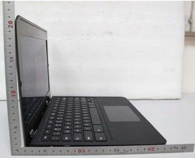
La verdad es que prácticamente nos habíamos olvidado de los Chromebooks, pero Google y algunas firmas importantes siguen trabajando en ello. Por ahora conocíamos los modelos de Samsung y Acer, y ahora descubrimos que Sony también tiene en el horno un dispositivo.
La firma japonesa también se apunta al sistema operativo Chrome OS, lo hará con un dispositivo dentro de su familia VAIO, conocido internamente como VCC111. Ha salido a la luz al pasar por la base de datos del organismo FCC norteamericano, por lo que pronto podría ser un producto real en dicho mercado.
Exteriormente bien podríamos pensar que no es un Chromebook, pero la fuente de la noticia nos comenta que en la segunda página de sus manuales hay una referencia al sistema: “start Chrome OS”, que acaba con las dudas.
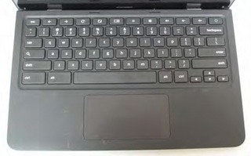
La siguiente prueba la tenemos en el teclado, un ordenador Sony con sistema operativo de Microsoft no iba a obviar la tecla Windows, que no está presente en este modelo. Parece claro que la disposición de teclas es la de un Chromebook.
Algunos detalles que nos adelantan son su salida HDMI, lector de tarjetas SD, dos puertos USB 2.0, la batería parece que es sustituible por el usuario, y la pantalla es de 11.6 pulgadas firmada por Samsung.
Hay un detalle extraño entre las informaciones, el hardware interno es nombrado como T25, que podría hacer alusión a Nvidia Tegra 2, por lo que podría tratarse del primer Chromebook que utilice hardware ARM, en lugar de Intel como los presentados por Samsung o Acer.
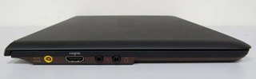
Vía | Laptop Reviews
Tue, 27 Mar 2012 07:20:51 GMT
El HP Omni27 llega a España
El HP Omni27 llega a España
HP ya tiene en España su ordenador todo en uno más ambicioso. Y no lo decimos solo por las 27 pulgadas del HP Omni27 sino por la idea que transmite este equipo. El HP Omni27 es un ordenador todo en uno que, antes de que te equivoques, no tiene pantalla táctil. Pese a ello, HP le ha otorgado la suite Magic Canvas como ya anunció que haría con sus equipos. Este software es la capa conocida anteriormente como TouchSmart y que incluye acceso directo y más intuitivo a utilidades y aplicaciones relacionadas con el uso habitual que se hace en un hogar medio del ordenador, entre ellas Internet, redes sociales y mucho “multimedia”. Del HP Omni27, que podemos configurar en los aspectos básicos de memoria, procesadores y almacenamiento, debes quedarte con que incluye sonido Beats Audio y conexión HDMI, además de las opciones de unidad Blu-Ray, sintonizador de televisión con mando a distancia y sistema VESA. Con todo ello podemos pensar en este equipo como un centro multimedia y no solo un ordenador de sobremesa. No faltan la conectividad bluetooth y Wifi de serie. La lástima es que HP no haya aprovechado la diagonal tan grande para dotarlo de más resolución que la estándar 1080p, algo que apreciarían trabajadores pero que también es cierto que para el hogar digital no es tan clave. Y ese es su mercado potencial. Sí que nos gusta la eliminación del marco y que el cristal de la pantalla vaya de lado a lado del equipo, además de la inclinación de 25 grados de la misma. El HP Omni27 llega a los escaparates a partir de la segunda semana de abril con un precio de partida de 1.500 euros. Más información | HP.

HP ya tiene en España su ordenador todo en uno más ambicioso. Y no lo decimos solo por las 27 pulgadas del HP Omni27 sino por la idea que transmite este equipo.
El HP Omni27 es un ordenador todo en uno que, antes de que te equivoques, no tiene pantalla táctil. Pese a ello, HP le ha otorgado la suite Magic Canvas como ya anunció que haría con sus equipos. Este software es la capa conocida anteriormente como TouchSmart y que incluye acceso directo y más intuitivo a utilidades y aplicaciones relacionadas con el uso habitual que se hace en un hogar medio del ordenador, entre ellas Internet, redes sociales y mucho “multimedia”.
Del HP Omni27, que podemos configurar en los aspectos básicos de memoria, procesadores y almacenamiento, debes quedarte con que incluye sonido Beats Audio y conexión HDMI, además de las opciones de unidad Blu-Ray, sintonizador de televisión con mando a distancia y sistema VESA. Con todo ello podemos pensar en este equipo como un centro multimedia y no solo un ordenador de sobremesa. No faltan la conectividad bluetooth y Wifi de serie.

La lástima es que HP no haya aprovechado la diagonal tan grande para dotarlo de más resolución que la estándar 1080p, algo que apreciarían trabajadores pero que también es cierto que para el hogar digital no es tan clave. Y ese es su mercado potencial.
Sí que nos gusta la eliminación del marco y que el cristal de la pantalla vaya de lado a lado del equipo, además de la inclinación de 25 grados de la misma.

El HP Omni27 llega a los escaparates a partir de la segunda semana de abril con un precio de partida de 1.500 euros.
Más información | HP.
Tue, 27 Mar 2012 05:14:49 GMT
Xbox LITE, así nos la imaginamos nosotros
Xbox LITE, así nos la imaginamos nosotros
¿Irá la próxima generación de consolas por el camino de la potencia? ¿O es el momento del cambio definitivo? Si miramos los datos de ventas de Angry Bird Space y las posibilidades de los nuevos modelos de dispositivos para jugar, las dudas me asaltan. El rumor de que en el próximo evento E3 Microsoft presentaría su nuevo equipo Xbox Lite refuerzan la idea de que algo podría cambiar. Con la Xbox 720 alejada un año más de este evento, Microsoft podría tener un plan B que consistiría en un receptor al estilo del Apple TV y en el que concentraría el llamado juego ocasional y los usos multimedia de su consola. Veamos cómo nos imaginamos nosotros esa Xbox Lite. Xbox Lite, un puente entre plataformas Llevamos mucho tiempo hablando de la plataforma de entretenimiento, no solo de juegos, que está configurando Microsoft con su Xbox 360. La hemos definido varias veces como centro multimedia total, y así nos lo parece. Kinect y la integración con Windows Phone han sido los dos últimos pasos importantes, y parece lógico pensar que, si está en desarrollo una próxima generación de la consola centrada en todo tipo de jugadores, Microsoft quiera dejar por el camino una semilla que enganche y mantenga en su ecosistema a los que buscan principalmente un centro multimedia con posibilidades de juego. El Apple TV nos parece el ejemplo a seguir por idea conceptual: equipo compacto, bastante asequible y con multimedia y juego en su gama de posibilidades gracias a la conexión sencilla con otros dispositivos de la marca. Para mi, Xbox Lite iría en ese camino. Como apuntan los rumores, este equipo estaría rondando los 100 dólares, sería pequeño y se conectaría directamente al televisor. A partir de ahí podemos empezar a pensar en un dispositivo que accediera a los servicios de redes sociales, Internet y vídeo bajo demanda de Xbox Live y que además permitiera una conexión directa con teléfonos Windows Phone, tanto a modo de control como de “espejo” en el que reflejarse. Las aplicaciones de esos terminales podrían pasar directamente a la pantalla grande y el juego ocasional destinado a tablets y teléfonos tendría un nuevo aliado en el salón, además de todo el catálogo de juegos Arcade del sistema Xbox. Con esta Xbox Lite, Microsoft estaría atando dos cabos importantes: tener un anuncio importante antes de la llegada de la próxima Xbox “grande”, y ofrecer un acceso a multimedia y juegos de forma económica, sencilla y atando su ecosistema, cada día más importante. En Vidaextra | Microsoft podría estar preparando una Xbox Lite antes del lanzamiento de Xbox 720.

¿Irá la próxima generación de consolas por el camino de la potencia? ¿O es el momento del cambio definitivo? Si miramos los datos de ventas de Angry Bird Space y las posibilidades de los nuevos modelos de dispositivos para jugar, las dudas me asaltan.
El rumor de que en el próximo evento E3 Microsoft presentaría su nuevo equipo Xbox Lite refuerzan la idea de que algo podría cambiar. Con la Xbox 720 alejada un año más de este evento, Microsoft podría tener un plan B que consistiría en un receptor al estilo del Apple TV y en el que concentraría el llamado juego ocasional y los usos multimedia de su consola.
Veamos cómo nos imaginamos nosotros esa Xbox Lite.
Xbox Lite, un puente entre plataformas
Llevamos mucho tiempo hablando de la plataforma de entretenimiento, no solo de juegos, que está configurando Microsoft con su Xbox 360. La hemos definido varias veces como centro multimedia total, y así nos lo parece.
Kinect y la integración con Windows Phone han sido los dos últimos pasos importantes, y parece lógico pensar que, si está en desarrollo una próxima generación de la consola centrada en todo tipo de jugadores, Microsoft quiera dejar por el camino una semilla que enganche y mantenga en su ecosistema a los que buscan principalmente un centro multimedia con posibilidades de juego.
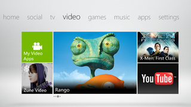
El Apple TV nos parece el ejemplo a seguir por idea conceptual: equipo compacto, bastante asequible y con multimedia y juego en su gama de posibilidades gracias a la conexión sencilla con otros dispositivos de la marca.
Para mi, Xbox Lite iría en ese camino. Como apuntan los rumores, este equipo estaría rondando los 100 dólares, sería pequeño y se conectaría directamente al televisor.
A partir de ahí podemos empezar a pensar en un dispositivo que accediera a los servicios de redes sociales, Internet y vídeo bajo demanda de Xbox Live y que además permitiera una conexión directa con teléfonos Windows Phone, tanto a modo de control como de “espejo” en el que reflejarse.
Las aplicaciones de esos terminales podrían pasar directamente a la pantalla grande y el juego ocasional destinado a tablets y teléfonos tendría un nuevo aliado en el salón, además de todo el catálogo de juegos Arcade del sistema Xbox.
Con esta Xbox Lite, Microsoft estaría atando dos cabos importantes: tener un anuncio importante antes de la llegada de la próxima Xbox “grande”, y ofrecer un acceso a multimedia y juegos de forma económica, sencilla y atando su ecosistema, cada día más importante.
En Vidaextra | Microsoft podría estar preparando una Xbox Lite antes del lanzamiento de Xbox 720.
Mon, 26 Mar 2012 20:44:50 GMT
HTCSense.com cierra sus puertas el 30 de abril, esperamos un sustituto
HTCSense.com cierra sus puertas el 30 de abril, esperamos un sustituto
Noticia sorpresa que habrá que pararse a entender con más información por parte de HTC, ya que no nos queda claro qué es lo que van a hacer con la página web que abría las puertas de la nube a sus clientes. Los usuarios están recibiendo un correo por parte de HTC en el que los informa del cierre de HTCSense.com el próximo 30 de abril, y por lo tanto, invita a descargar los contenidos que tenemos alojados en él para evitar la pérdida de los mismos. Suena realmente raro de parte de una compañía que había apostado por el valor añadido que aportaban sus servicios a sus compradores, y con la llegada de los teléfonos HTC One, no es lo que precisamente esperábamos. HTC informa de que está trabajando en mejorar sus servicios, por lo que estamos seguros de que hay renovación a la vuelta de la esquina, pero por qué invitarnos a descargar nuestros contenidos, y no pasarlos al supuesto nuevo servicio. A HTCSense.com se tiene acceso desde tablets y teléfonos de la compañía taiwanesa, y en él se pueden almacenar contactos, mensajes, footsprints o el registro de llamadas de los dispositivos. Curioso también que la propia HTC nos invita a pasarnos por Google Play para encontrar alternativas a sus servicios. Más información | HTC
Noticia sorpresa que habrá que pararse a entender con más información por parte de HTC, ya que no nos queda claro qué es lo que van a hacer con la página web que abría las puertas de la nube a sus clientes.
Los usuarios están recibiendo un correo por parte de HTC en el que los informa del cierre de HTCSense.com el próximo 30 de abril, y por lo tanto, invita a descargar los contenidos que tenemos alojados en él para evitar la pérdida de los mismos.
Suena realmente raro de parte de una compañía que había apostado por el valor añadido que aportaban sus servicios a sus compradores, y con la llegada de los teléfonos HTC One, no es lo que precisamente esperábamos.
HTC informa de que está trabajando en mejorar sus servicios, por lo que estamos seguros de que hay renovación a la vuelta de la esquina, pero por qué invitarnos a descargar nuestros contenidos, y no pasarlos al supuesto nuevo servicio.
A HTCSense.com se tiene acceso desde tablets y teléfonos de la compañía taiwanesa, y en él se pueden almacenar contactos, mensajes, footsprints o el registro de llamadas de los dispositivos. Curioso también que la propia HTC nos invita a pasarnos por Google Play para encontrar alternativas a sus servicios.
Más información | HTC
Mon, 26 Mar 2012 13:30:00 GMT
Curvas peligrosas: adivina el cacharro
Curvas peligrosas: adivina el cacharro
Tras los eventos clave del año (CES y MWC), la mesa de trabajo de los editores de Xataka rebosa de nuevos gadgets para analizar. Al fin y al cabo nos gusta hablar de ellos pero mucho más trastearlos a fondo y poder contarte qué se siente con los más deseados. Este nuevo miembro de nuestro selecto club de Adivina el cacharro es uno de ellos. La imagen ya nos da muchas pistas, entre otras, que su diseño es un arma pero no con filo, pues sus curvas son de lo más agradable de tocar. Pero no te fies porque hay garras para luchar. ¿Adivinas el cacharro que estamos probando en Xataka? Date prisa que mañana actualizamos con la solución del misterio.

Tras los eventos clave del año (CES y MWC), la mesa de trabajo de los editores de Xataka rebosa de nuevos gadgets para analizar. Al fin y al cabo nos gusta hablar de ellos pero mucho más trastearlos a fondo y poder contarte qué se siente con los más deseados.
Este nuevo miembro de nuestro selecto club de Adivina el cacharro es uno de ellos. La imagen ya nos da muchas pistas, entre otras, que su diseño es un arma pero no con filo, pues sus curvas son de lo más agradable de tocar. Pero no te fies porque hay garras para luchar.
¿Adivinas el cacharro que estamos probando en Xataka? Date prisa que mañana actualizamos con la solución del misterio.
Mon, 26 Mar 2012 10:30:00 GMT
Motoluxe y Motorola Defy Mini llegan a España en abril
Motoluxe y Motorola Defy Mini llegan a España en abril
Orange será la operadora que se traiga a España, a partir del mes de abril, a los dos últimos terminales del fabricante Motorola. El Motorola Motoluxe y el Defy Mini fueron presentados por la compañía en el pasado MWC 2012 y serán parte de los modelos que la compañía use para atraer nuevos clientes o consolidar a los que ya posee. El Motoluxe lo hará buscando algo de exclusividad, mientras que el Defy Mini se centrará en deportistas y quienes quieran un teléfono Android resistente. Precisamente a los clientes que opten por éste último, se les dará un brazalete para llevar bien acomodado el teléfono mientras se hace deporte. Ambos terminales llegan con Android 2.3 como sistema operativo y a partir de cero euros con la tarifa Delfin 20 de Orange. Más información | Motorola.

Orange será la operadora que se traiga a España, a partir del mes de abril, a los dos últimos terminales del fabricante Motorola.
El Motorola Motoluxe y el Defy Mini fueron presentados por la compañía en el pasado MWC 2012 y serán parte de los modelos que la compañía use para atraer nuevos clientes o consolidar a los que ya posee. El Motoluxe lo hará buscando algo de exclusividad, mientras que el Defy Mini se centrará en deportistas y quienes quieran un teléfono Android resistente.
Precisamente a los clientes que opten por éste último, se les dará un brazalete para llevar bien acomodado el teléfono mientras se hace deporte. Ambos terminales llegan con Android 2.3 como sistema operativo y a partir de cero euros con la tarifa Delfin 20 de Orange.
Más información | Motorola.
Mon, 26 Mar 2012 08:29:00 GMT
Discos duros multimedia: ventajas de los streamers de contenido
Discos duros multimedia: ventajas de los streamers de contenido
Aunque cuando hablamos de discos duros multimedia todos asociamos ese tipo de equipos a reproductores con disco duro interno, hay ya un amplio mercado de los llamados streamers de contenido, que son una excelente opción para aquellos consumidores que se afanan en coleccionar discos duros externos o directamente no quieren añadir otro más a su lista de equipos en casa. En realidad, no hace falta coleccionar discos duros para optar por un streamer de contenido como disco duro multimedia. Las ventajas que vamos a ver son más que suficientes, entre ellas, que cualquier disco duro portátil se pueda convertir en uno multimedia. Ventajas de un streamer de contenido
Más silenciosos al poder usar discos externos con mejor rendimiento, entre ellos, los SSD portátiles, y requerir de menos ventiladores para su refrigeración.
Más discretos, lo que los hace pasar más desapercibidos junto al televisor, pues son dispositivos por lo general muy compactos.
Más flexibles: el streamer de contenido, al no depender de una capacidad fija en forma de disco duro interno, nos da más posibilidades de configuración y gestión, teniendo en teoría un disco duro multimedia con capacidad infinita. Cualquier unidad USB se convierte al instante en un disco duro multimedia, y si solemos almacenar nuestro contenido en este tipo de equipos, ¿por qué comprar otro más y no solo un reproductor?
Con más personalidad: por suerte, los streamers de contenido son equipos que, con una base común, nos dan unos elementos característicos e individuales que ya analizamos cuando escribimos sobre ocho streamers de contenido y sus puntos fuertes.
Más fáciles de transportar: siendo equipo más pequeños, el streamer de contenido es un candidato perfecto a reproductor multimedia para llevar de un lado a otro. Piensa en esa visita a casa de un amigo en la que nos llevamos nuestro streamer y el anfitrión pone la memoria USB con las fotos de su último viaje que ya no tenemos que ver en la reducida pantalla de su portátil.
Más amigos de los NAS: si el otro día os hablábamos de lo buenos amigos que eran los discos duros multimedia y los NAS, los servidores de contenido son casi amigos íntimos y de toda la vida de los streamers si estos incluyen conectividad. No necesitamos ni un disco duro portátil para tener contenido. Aunque pudiera parecer lo contrario, los streamer de contenido también tienen sus inconvenientes, y el más importante de todos es que nosotros tenemos que poner el disco duro desde el que reproducir contenido, tenerlo a la vista en la mayoría de los casos y correr el riesgo de olvidarlo alguna vez. Y tú, ¿qué prefieres? ¿streamer de contenido o disco duro multimedia clásico?
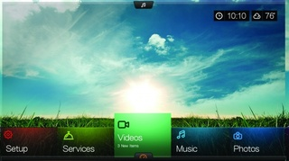
Aunque cuando hablamos de discos duros multimedia todos asociamos ese tipo de equipos a reproductores con disco duro interno, hay ya un amplio mercado de los llamados streamers de contenido, que son una excelente opción para aquellos consumidores que se afanan en coleccionar discos duros externos o directamente no quieren añadir otro más a su lista de equipos en casa.
En realidad, no hace falta coleccionar discos duros para optar por un streamer de contenido como disco duro multimedia. Las ventajas que vamos a ver son más que suficientes, entre ellas, que cualquier disco duro portátil se pueda convertir en uno multimedia.
Ventajas de un streamer de contenido
-
Más silenciosos al poder usar discos externos con mejor rendimiento, entre ellos, los SSD portátiles, y requerir de menos ventiladores para su refrigeración.
-
Más discretos, lo que los hace pasar más desapercibidos junto al televisor, pues son dispositivos por lo general muy compactos.
-
Más flexibles: el streamer de contenido, al no depender de una capacidad fija en forma de disco duro interno, nos da más posibilidades de configuración y gestión, teniendo en teoría un disco duro multimedia con capacidad infinita. Cualquier unidad USB se convierte al instante en un disco duro multimedia, y si solemos almacenar nuestro contenido en este tipo de equipos, ¿por qué comprar otro más y no solo un reproductor?
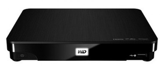
-
Con más personalidad: por suerte, los streamers de contenido son equipos que, con una base común, nos dan unos elementos característicos e individuales que ya analizamos cuando escribimos sobre ocho streamers de contenido y sus puntos fuertes.
-
Más fáciles de transportar: siendo equipo más pequeños, el streamer de contenido es un candidato perfecto a reproductor multimedia para llevar de un lado a otro. Piensa en esa visita a casa de un amigo en la que nos llevamos nuestro streamer y el anfitrión pone la memoria USB con las fotos de su último viaje que ya no tenemos que ver en la reducida pantalla de su portátil.
-
Más amigos de los NAS: si el otro día os hablábamos de lo buenos amigos que eran los discos duros multimedia y los NAS, los servidores de contenido son casi amigos íntimos y de toda la vida de los streamers si estos incluyen conectividad. No necesitamos ni un disco duro portátil para tener contenido.
Aunque pudiera parecer lo contrario, los streamer de contenido también tienen sus inconvenientes, y el más importante de todos es que nosotros tenemos que poner el disco duro desde el que reproducir contenido, tenerlo a la vista en la mayoría de los casos y correr el riesgo de olvidarlo alguna vez.
Y tú, ¿qué prefieres? ¿streamer de contenido o disco duro multimedia clásico?
Mon, 26 Mar 2012 07:00:00 GMT
Vibraciones al volante como complemento del GPS
Vibraciones al volante como complemento del GPS
La industria sigue haciendo esfuerzos por encontrar sistemas de apoyo a la navegación GPS que nos permitan no tener que desviar la vista de la carretera, lo último que nos presenta la operadora AT&T, junto a la Universidad de Carnegie Mellon, poco tiene que ver con móviles. Han desarrollado un volante en el que mediante vibraciones nos indican cuál es la siguiente maniobra a realizar, y al tratarse de una respuesta que sentimos con las manos, reduciría las distracciones externas. Estas vibraciones serían complementarias a la información habitual que nos sirve el GPS. El sistema cuenta con veinte puntos de vibración diferenciados alrededor del volante, que sincronizados pueden darnos diferentes mensajes, un ejemplo: si la vibración tuviera lugar en el sentido de las agujas del reloj, nos estará avisando de que hay que girar a la derecha. Según los estudios realizados por los desarrolladores, el sistema se muestra más efectivo con conductores jóvenes, desviando en menor medida la mirada hacia la pantalla del dispositivo GPS. En el caso de los conductores más mayores, la cosa funcionaba mejor si sólo se le servían instrucciones acústicas. Sin duda, el volante es uno de los elementos del coche que más componentes está asimilando en los últimos años, como la inclusión de los Airbags o botones de control de todo tipo (audio, marchas, control de velocidad), así que no nos extrañará encontrarnos con la vibración. Al margen de las indicaciones en la navegación GPS, otras aplicaciones del desarrollo tienen que ver con la seguridad, como el aviso en el caso de que tengamos un vehículo en el punto muerto de visión, o situaciones similares. El sistema será presentado al gran público por AT&T el próximo mes de junio, por lo que parece que la cosa va en serio. ¿Consideráis interesante el avance?¿encontráis utilidad práctica? Vía | Autoblog
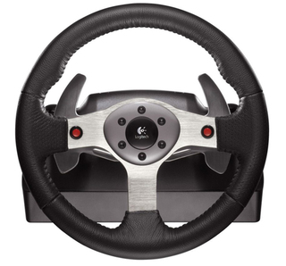
La industria sigue haciendo esfuerzos por encontrar sistemas de apoyo a la navegación GPS que nos permitan no tener que desviar la vista de la carretera, lo último que nos presenta la operadora AT&T, junto a la Universidad de Carnegie Mellon, poco tiene que ver con móviles.
Han desarrollado un volante en el que mediante vibraciones nos indican cuál es la siguiente maniobra a realizar, y al tratarse de una respuesta que sentimos con las manos, reduciría las distracciones externas. Estas vibraciones serían complementarias a la información habitual que nos sirve el GPS.
El sistema cuenta con veinte puntos de vibración diferenciados alrededor del volante, que sincronizados pueden darnos diferentes mensajes, un ejemplo: si la vibración tuviera lugar en el sentido de las agujas del reloj, nos estará avisando de que hay que girar a la derecha.
Según los estudios realizados por los desarrolladores, el sistema se muestra más efectivo con conductores jóvenes, desviando en menor medida la mirada hacia la pantalla del dispositivo GPS. En el caso de los conductores más mayores, la cosa funcionaba mejor si sólo se le servían instrucciones acústicas.
Sin duda, el volante es uno de los elementos del coche que más componentes está asimilando en los últimos años, como la inclusión de los Airbags o botones de control de todo tipo (audio, marchas, control de velocidad), así que no nos extrañará encontrarnos con la vibración.
Al margen de las indicaciones en la navegación GPS, otras aplicaciones del desarrollo tienen que ver con la seguridad, como el aviso en el caso de que tengamos un vehículo en el punto muerto de visión, o situaciones similares.
El sistema será presentado al gran público por AT&T el próximo mes de junio, por lo que parece que la cosa va en serio. ¿Consideráis interesante el avance?¿encontráis utilidad práctica?
Vía | Autoblog
Mon, 26 Mar 2012 02:56:24 GMT
Square responde a Paypal con Pay with Square
Square responde a Paypal con Pay with Square
Si hace unos días era PayPal la que se metía en el negocio de Square con la salida de Paypal Here y apretaba a la empresa pionera en el pago con tarjeta de crédito física usando un lector conectado al iPhone de Apple, ahora es Square la que responde a Paypal con una renovada aplicación móvil para realizar pagos sin sacar la tarjeta del bolsillo. Pay with Square es el nombre de la renovada aplicación cuya principal novedad es que ya está disponible también para teléfonos Android, lo que le abre muchas más puertas que hasta ahora. Esta nueva versión de la aplicación de pago con el teléfono móvil de Square golpea directamente en lo que ha hecho famoso a Paypal hasta ahora: el pago sin usar tarjetas de crédito físicas. Con ello no quieren decir que se olviden de su lector de tarjetas, pero parece claro que esa forma de pago está condenada al olvido y que todo girará alrededor de una aplicación en la que introduciremos los datos de nuestras tarjetas de pago y que interaccionará con el sistema de los comercios asociados. La nueva aplicación incluye muchas mejoras para facilitar el pago con el teléfono, entre ellas, la posibilidad de notificación de nuestra presencia en el local al vendedor, que puede procesar el pago teniendo una fotografía nuestra en su sistema tras confirmar el pedido que le hagamos. Las funciones de búsqueda de locales, localización en el mapa o personalización de la información y ofertas que reciben los usuarios de Pay with Square en sus teléfonos ha sido mejorada también. Vía | Gigaom.
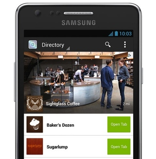
Si hace unos días era PayPal la que se metía en el negocio de Square con la salida de Paypal Here y apretaba a la empresa pionera en el pago con tarjeta de crédito física usando un lector conectado al iPhone de Apple, ahora es Square la que responde a Paypal con una renovada aplicación móvil para realizar pagos sin sacar la tarjeta del bolsillo.
Pay with Square es el nombre de la renovada aplicación cuya principal novedad es que ya está disponible también para teléfonos Android, lo que le abre muchas más puertas que hasta ahora.
Esta nueva versión de la aplicación de pago con el teléfono móvil de Square golpea directamente en lo que ha hecho famoso a Paypal hasta ahora: el pago sin usar tarjetas de crédito físicas. Con ello no quieren decir que se olviden de su lector de tarjetas, pero parece claro que esa forma de pago está condenada al olvido y que todo girará alrededor de una aplicación en la que introduciremos los datos de nuestras tarjetas de pago y que interaccionará con el sistema de los comercios asociados.
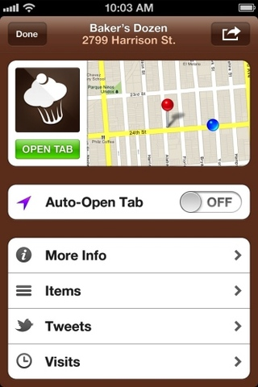
La nueva aplicación incluye muchas mejoras para facilitar el pago con el teléfono, entre ellas, la posibilidad de notificación de nuestra presencia en el local al vendedor, que puede procesar el pago teniendo una fotografía nuestra en su sistema tras confirmar el pedido que le hagamos.
Las funciones de búsqueda de locales, localización en el mapa o personalización de la información y ofertas que reciben los usuarios de Pay with Square en sus teléfonos ha sido mejorada también.
Vía | Gigaom.
Sun, 25 Mar 2012 09:17:00 GMT
Probamos la Panasonic GX1
Probamos la Panasonic GX1
La renovación más lógica de la Panasonic Lumix GF1, que parecía que nunca iba a llegar, finalmente “ocurrió” a finales del año pasado. La Panasonic Lumix GX1 ha pasado por las manos de Xataka Foto, que nos cuenta lo que tiene que ofrecernos esta cámara sin espejo del sistema micro cuatro tercios que por 600 euros demuestra que es una buena sucesora de la GF1, con su excelente construcción, su rápido enfoque pero también algunas pegas en forma de pantalla táctil mejorable y grabación de vídeo de calidad pero limitada. En Xataka Foto | Panasonic Lumix DMC-GX1, la hemos probado.

La renovación más lógica de la Panasonic Lumix GF1, que parecía que nunca iba a llegar, finalmente “ocurrió” a finales del año pasado.
La Panasonic Lumix GX1 ha pasado por las manos de Xataka Foto, que nos cuenta lo que tiene que ofrecernos esta cámara sin espejo del sistema micro cuatro tercios que por 600 euros demuestra que es una buena sucesora de la GF1, con su excelente construcción, su rápido enfoque pero también algunas pegas en forma de pantalla táctil mejorable y grabación de vídeo de calidad pero limitada.
En Xataka Foto | Panasonic Lumix DMC-GX1, la hemos probado.
Sun, 25 Mar 2012 06:09:00 GMT
Cinco años de la PS3: imagen de la semana
Cinco años de la PS3: imagen de la semana
Esta semana, aunque algunos se sorprendan, la imagen de la semana se la hemos otorgado a una consola de sobremesa que cumple cinco añitos en Europa. Hablamos de la Sony PS3, que llegó al mercado europeo el 23 de marzo de 2007, y hasta ahora lleva más de 50 millones de unidades vendidas. Todavía en pleno apogeo, tras una renovación principalmente en el diseño hace poco tiempo, la Sony PS3 no espera sucesora de momento. De la historia de la Sony PS3 sin duda nos quedamos con su papel en la guerra entre el formato Blu-Ray y el HD-DVD. En ella, la balanza se decantó por el formato defendido por Sony principalmente por la integración de un lector en la consola de sobremesa de Sony. Feliz cumpleaños. Más información | Blog Playstation.

Esta semana, aunque algunos se sorprendan, la imagen de la semana se la hemos otorgado a una consola de sobremesa que cumple cinco añitos en Europa.
Hablamos de la Sony PS3, que llegó al mercado europeo el 23 de marzo de 2007, y hasta ahora lleva más de 50 millones de unidades vendidas.
Todavía en pleno apogeo, tras una renovación principalmente en el diseño hace poco tiempo, la Sony PS3 no espera sucesora de momento.
De la historia de la Sony PS3 sin duda nos quedamos con su papel en la guerra entre el formato Blu-Ray y el HD-DVD. En ella, la balanza se decantó por el formato defendido por Sony principalmente por la integración de un lector en la consola de sobremesa de Sony.
Feliz cumpleaños.
Más información | Blog Playstation.
Sat, 24 Mar 2012 14:50:00 GMT
One for All SV 1730 te deja compartir canales de televisión
One for All SV 1730 te deja compartir canales de televisión
One For All ha presentado una nueva solución inalámbrica para tener la señal de audio y vídeo del televisor principal de casa en uno secundario o en otra estancia. El One For All TV Sender SV1730 es un emisor de señal que funciona en la banda de los 5.8 Ghz y permite ver el mismo canal en dos televisores aunque solo uno de ellos tenga posibilidad de recibir dicha emisión o incluso dos programas diferentes que tengan el mismo televisor como fuente. Este dispositivo también incluye un prolongador del mando a distancia principal para poder controlar el televisor principal desde el que se envía la señal. Ya está a la venta por 80 euros. Más información | One For All.

One For All ha presentado una nueva solución inalámbrica para tener la señal de audio y vídeo del televisor principal de casa en uno secundario o en otra estancia.
El One For All TV Sender SV1730 es un emisor de señal que funciona en la banda de los 5.8 Ghz y permite ver el mismo canal en dos televisores aunque solo uno de ellos tenga posibilidad de recibir dicha emisión o incluso dos programas diferentes que tengan el mismo televisor como fuente.
Este dispositivo también incluye un prolongador del mando a distancia principal para poder controlar el televisor principal desde el que se envía la señal. Ya está a la venta por 80 euros.
Más información | One For All.
Sat, 24 Mar 2012 07:02:00 GMT
Qnap TS-x69 Pro, más potencia para los que necesitan mucho espacio
Qnap TS-x69 Pro, más potencia para los que necesitan mucho espacio
Qnap actualiza su gama de servidores Turno NAS de la serie TS-x69 Pro con la renovación completa de la misma, disponible en versiones de 2, 4, 5, 6 u 8 bahías, al gusto del consumidor. Los nuevos Qnap TS-x69 Pro estrenan como cerebro un procesador Intel Atom D2800 de doble núcleo a 2.13 Ghz junto con 1 GB de memoria RAM DDR3. Como conexiones, todos los modelos cuentan con 2 puertos Gigabit Ethernet y uno USB 3.0, para alcanzar hasta 220 MB/seg en entornos Windows. En su interior podemos alojar discos duros SATA de 6 Gbps de 2.5 y 3.5 pulgadas los cuales podemos intercambiar en caliente. Los precios oficiales todavía no han sido anunciados. Más información | Qnap.

Qnap actualiza su gama de servidores Turno NAS de la serie TS-x69 Pro con la renovación completa de la misma, disponible en versiones de 2, 4, 5, 6 u 8 bahías, al gusto del consumidor.
Los nuevos Qnap TS-x69 Pro estrenan como cerebro un procesador Intel Atom D2800 de doble núcleo a 2.13 Ghz junto con 1 GB de memoria RAM DDR3. Como conexiones, todos los modelos cuentan con 2 puertos Gigabit Ethernet y uno USB 3.0, para alcanzar hasta 220 MB/seg en entornos Windows.
En su interior podemos alojar discos duros SATA de 6 Gbps de 2.5 y 3.5 pulgadas los cuales podemos intercambiar en caliente. Los precios oficiales todavía no han sido anunciados.
Más información | Qnap.